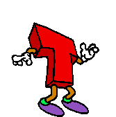

IMPORTANTE: Se você não ouve nada, clique no play!
Navegadores como o Google Chrome às vezes bloqueiam reprodução automática de áudio :(
Your browser does not support the audio element.

Clique em nossos nomes ou fotos para ver as páginas individuais!
Laboratódio 2 - Imagem e Captura de Vídeo
Laboratódio 3 - Codificação de Imagem por DCT e Animação
Laboratódio 4 - Codificação de Imagem com DWT
Laboratódio 5 - Codificação de Imagem com DWT